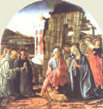
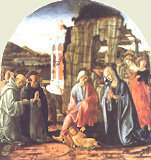

|  |
|---|
Textum Taurini 1951 editum
et automato translatum a Roberto Busa SJ in taenias magneticas
denuo recognovit Enrique Alarcón atque instruxit


|  |
|---|


[87323] Super Mt.*, pr. Matthaeus ex Iudaea et cetera. Evangelio Matthaei Hieronymus praemittit prologum, in quo tria facit: primo enim ipsum auctorem describit; secundo Evangelii mysteria aperit, ibi duorum in generatione Christi principia praesumens; tertio suam intentionem ostendit, ibi nobis autem in hoc studio argumenti fuit. Auctorem vero ipsum describit ex quatuor: primo ex nomine, cum dicit Matthaeus; secundo ex origine, cum dicit ex Iudaea; tertio ex scribendi ordine, ibi sicut in ordine primus ponitur; quarto ex vocatione, ibi, cuius vocatio ad dominum, idest ad Christum et cetera. De hoc Matth. IX, 9 et Luc. V, 27. Et nota quod Glossa interlinearis, quae dicit: primus, idest ante quem nullus etc., videtur velle, quod alii post Matthaeum scripserint in Iudaea, quod non est verum: solus enim Matthaeus scripsit in Iudaea, Marcus in Italia, Lucas in Achaia, Ioannes in Asia. Consequenter ipsius Evangelii mysteria aperit. Et primo aperit mysteria circa principium Evangelii; secundo ostendit eadem mysteria requirenda esse et in medio, et in fine, ibi in quo Evangelio utile est et cetera. In principio autem Evangelii duo tanguntur. Primo ponitur quasi quidam titulus, cum dicitur, liber generationis; secundo generationis cuiusdam series describitur, cum dicitur, Abraham genuit Isaac et cetera. Primo ergo ponit mysteria tituli, vel quae tanguntur in titulo; secundo mysteria generationis, ibi sicque quaterdenario. In titulo autem dicitur liber generationis Iesu Christi; ubi tanguntur duo principia, scilicet David et Abraham. Et hoc quia Abrahae prius datum est praeceptum de circumcisione; ad Rom. IV, 11: signum accepit circumcisionis, signaculum iustitiae fidei, quae est in praeputio, ut sit ipse pater omnium credentium. David autem electus est a domino; I Reg. XIII, 14: inveni virum secundum cor meum. Unde propter hoc isti duo tanguntur, ut denotetur quod Christus traxit originem ex circumcisis patribus et electis. Et hoc est, duorum, hominum, vel duorum principiorum, idest duo principia, scilicet David et Abraham. Consequenter ponit mysteria, quae tanguntur in genealogia. Et primo tangit mysteria ipsius Evangelii, vel Evangelistae; secundo ipsius Christi, ibi quarum omnium rerum et cetera. Et est mysterium quod Evangelista genealogiam Christi per tres tesseradecades distinxit: quarum prima est ab Abraham usque ad David; secunda a David usque ad transmigrationem; tertia usque ad Christum; ut ostenderet Christum esse et de circumcisis, et de electis, et de transmigrantibus. Et hoc est triformiter posito, idest tripliciter repetito, supra in genealogia, a credendi fide, idest ab ipso Abraham, qui fuit primum exemplar credendi, in electionis tempus porrigens, idest usque ad ipsum David deducens, et ab electione, idest ab ipso David, in transmigrationis diem dirigens; et a transmigrationis die usque in Christum definiens, patet, decursam, idest breviter et cursorie tactam, adventus domini ostendit generationem, et numero satisfaciens et tempori. Patet. Quarum omnium rerum et cetera. Nota quod in hac generationis serie quatuor tanguntur, tempus, numerus, ordo et dispositio sive ratio; quia ab Abraham usque ad David et cetera. Omnia ista nil aliud ostendunt nisi quod Deus Christus est: hoc enim intendit secundum dispositionem et rationem allegoricam, quod Christus est Deus. Quod est fidei necessarium, scilicet quod Christus Deus est, idest in omnibus non est plus de necessitate fidei, nisi quod Christus est Deus. Qui factus ex muliere et cetera. Nota, et expone, et signa capitula. Et omnia in cruce fixit, idest peccata, secundum quod de medio tulit, quod adversum nos chirographum erat. Item melius: Christus secundum Deum et hominem qui est omnia, secundum illud, Ioan. XII, 32, ego si exaltatus fuero a terra, omnia traham ad meipsum, et Phil. II, 10: ut in nomine domini omne genuflectatur caelestium, terrestrium et Infernorum. Ut triumphans ea in semetipso, quia per trophaeum crucis omnia sibi subiecit, et de quolibet triumphavit. Et patris nomen in patribus filio. Ad evidentiam autem huius notandum, quod in serie generationis ponuntur quidam patres et quidam filii, sicut patet. Item ponitur ibi quidam pater sine patre, sicut Adam: quidam filius sine filio, sicut Iesus. Item ponuntur quidam qui sunt patres et filii, sicut omnes intermedii. Per hoc autem mystice designatur, quod in Trinitate est pater et filius, sicut in hac genealogia sunt quidam patres, quidam filii. Item per hoc quod primus pater non habet patrem in hac serie, nec ultimus filius filium, ostenditur quod isti sunt ab aeterno. Item per hoc quod unus et idem in persona est pater et filius respectu diversorum, tangitur quod isti sunt unum, non quidem in persona, sed natura. Et hoc est quod dicit et patris nomen restituens filio in patribus, idest quod filius habeat patrem; in patribus, idest per hoc quod ponuntur ibi quidam patres. Et nomen restituens patri, idest quod pater habeat filium, et hoc in filiis, idest per hoc quod ponuntur ibi aliqui filii sine principio et sine fine: quia pater primus non habet patrem, nec ultimus filius filium. Ostendens se unum esse cum patre, idest unus naturae, quia unus, in persona, scilicet pater et filius, respectu tamen diversorum, in dicta genealogia. Nota interlinearem quae dicit: unus Christus; quod nihil est dictum. Consequenter ostendit consimilia mysteria requirenda esse in dicto Evangelio, non solum in principio, sed etiam in medio et fine: et hoc est, in quo Evangelio, scilicet Matthaei, utile est desiderantibus Deum sic, idest eodem modo sicut diximus, cognoscere prima, idest principium, vel media, vel perfecta, finem, et consummationem; ut et vocationem apostoli et cetera. Scriptum est Phil. III, 12: sequor autem, si quo modo comprehendam. Nobis autem. Hic ostendit intentionem suam, scilicet quod intendit quod ea quae hic dicuntur, vera sunt in historia, et tamen spiritualiter intelligenda. Nobis autem fuit hoc, idest haec intentio, in studio argumenti, idest prologi.